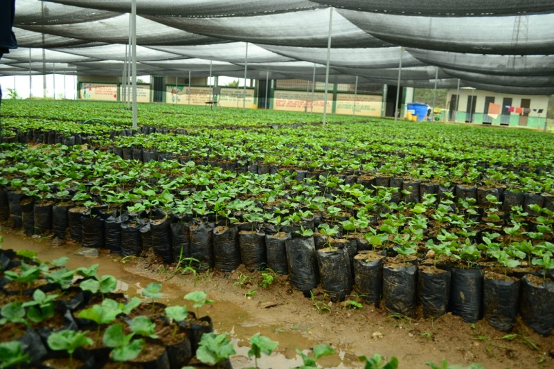
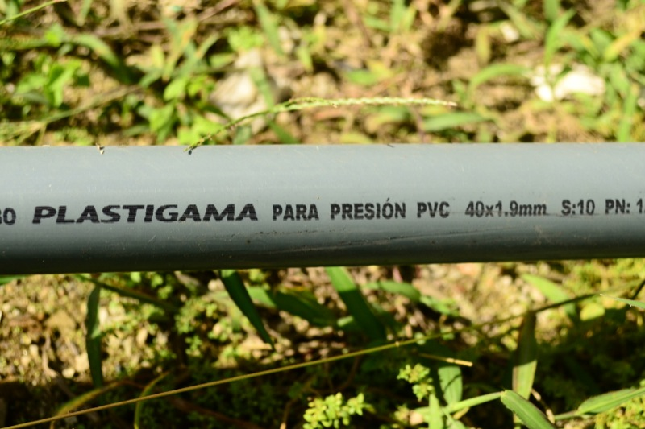
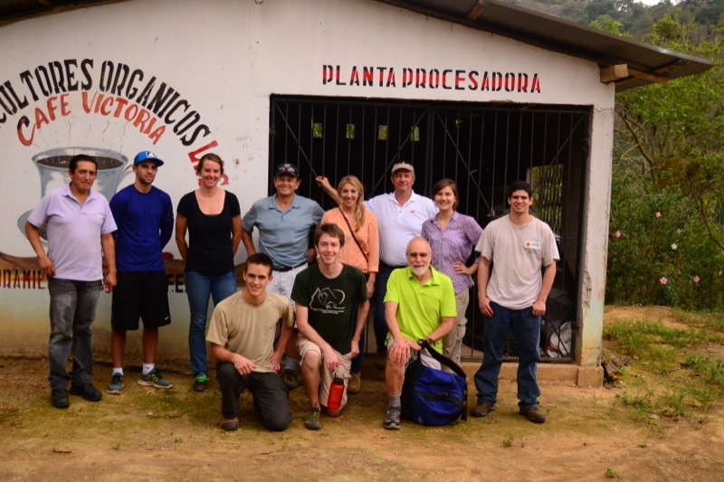
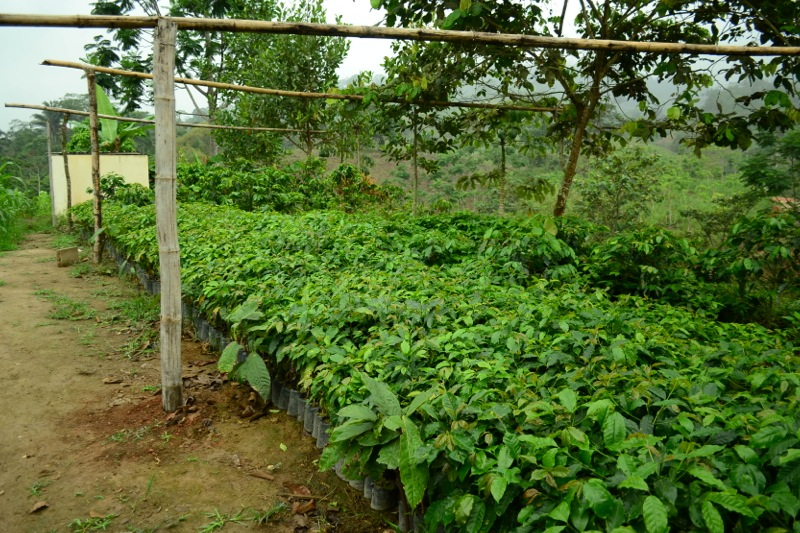
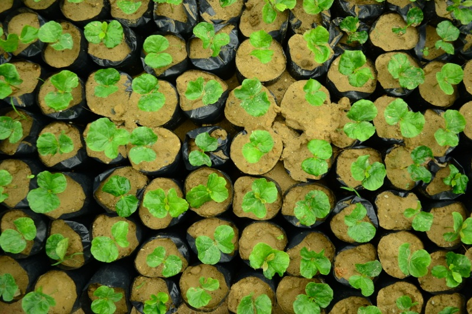
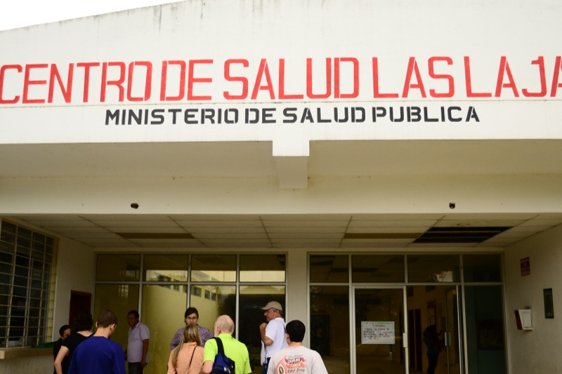
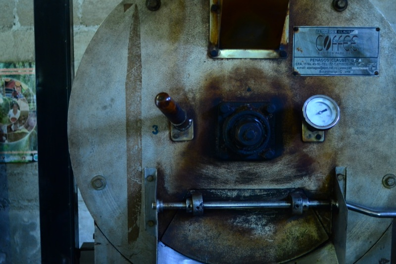

La Victoria High School Coffee Nursery
One of three locations that will be supplied by the planned pipeline.

Plastigama pipe to be used in construction of the pipline.

Original ACOLL Coffee Processing Plant
This plant will be expanded at one of the three sites supplied by the pipeline.

First travel team from the EWB-USA University of South Carolina Chapter, January 2013.

Coffee beans growing at one of the sites that will be supplied by the pipeline.

One of the three sites that will be supplied by the planned pipeline.

La Victoria High School Coffee Nursery
One of three locations that will be supplied by the planned pipeline.

La Victoria Hospital
Patients with waterborne and other illnesses seek medical attention here.

Coffee roaster in ACOLL's original coffee processing plant.